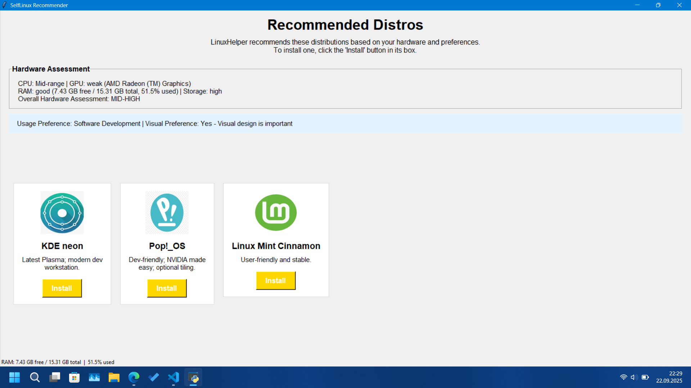
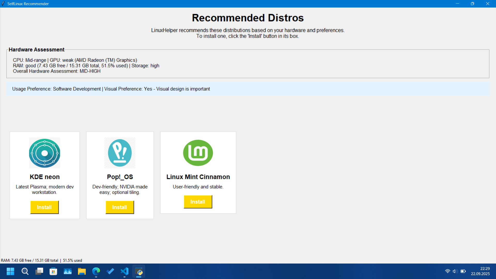

LinuxHelper

LinuxHelper (aka SelfLinux) is a great helper for Windows users' transition to Linux. To summarize its working logic: first it scans the user's computer's hardware, then classifies the collected hardware information and scores the computer. Afterwards it asks the user two personal questions and recommends 3 distributions (sometimes 2) to the user. The user selects a distribution, LinuxHelper downloads the selected distro's ISO from my Google Drive account and writes it to the user's USB. Finally, it restarts the user's computer with the recovery option and directs the user to the live USB (to the distro).
Features
- Hardware Detection: Automatically scans and analyzes your CPU, GPU, RAM and storage space
- Smart Recommendations: Recommends Linux distributions based on your hardware capabilities and preferences
- Visual Customization: Choose between performance-focused or visually attractive distributions
- Usage Optimization: Customized recommendations for gaming, office work or software development
- One-Click Installation: Downloads your selected distribution and writes directly to the USB drive
- Seamless Experience: Manages the entire process from recommendation to restart
Installation
- Download the project from the github site
- Run the LinuxHelper.exe file with administrator privileges.
Note:
If the .exe file gives a library error, you need to install these 4 libraries: pillow (to show distro logos on the recommendation screen), tkinter (for GUI), Psutil (to query most of your hardware) and finally GPutil (to query your GPU model). You can install each one with the "pip install library" command.
System requirements
- Windows 8 or newer (required for advanced boot options)
- Administrator privileges (required for USB writing)
- Internet connection (to download ISO files)
- USB drive (4GB+ recommended) for installation
- Python 3.6+ (if running from source)
How does it work?
- Hardware Analysis: LinuxHelper scans your system's CPU, GPU, RAM and storage
- Preference Selection: Choose your usage needs and visual preferences
- Recommendation Engine: Smart algorithm recommends the most suitable distributions
- ISO Download: Downloads the ISO file of your selected distribution from my Google Drive server (Versions on Google Drive may be old, so update your system after downloading the distribution!!)
- USB Writing: Creates a bootable USB drive with your selected distribution
- Restart Option: Optionally reboot directly to BIOS/boot menu
Libraries Used
- Python 3.x
- Tkinter for GUI (Graphical user interface)
- PyInstaller for executable file creation
- Pillow for image support in application
- GPutil for GPU querying
- Hardware detection libraries (psutil)
- PowerShell integration for system operations
Screenshots
 
